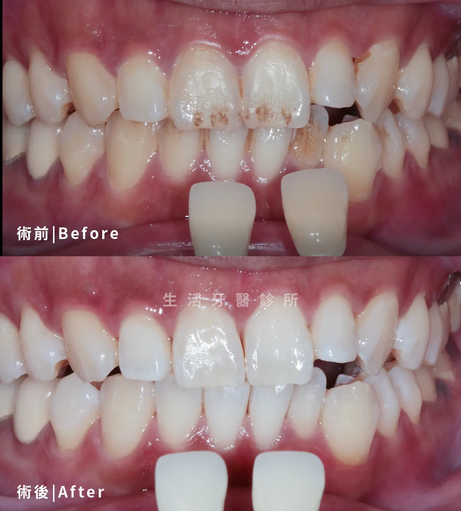
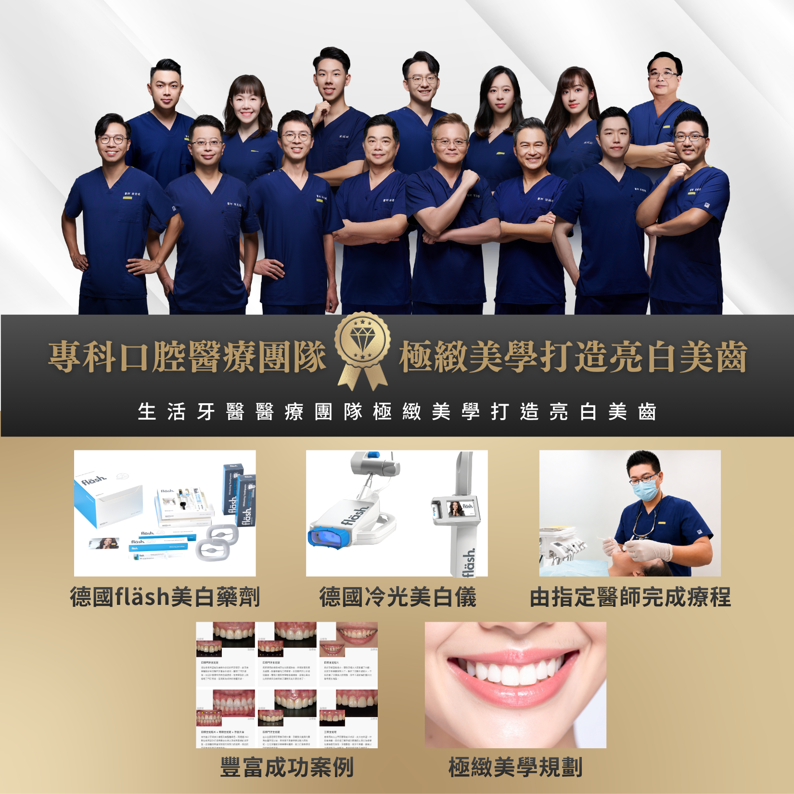
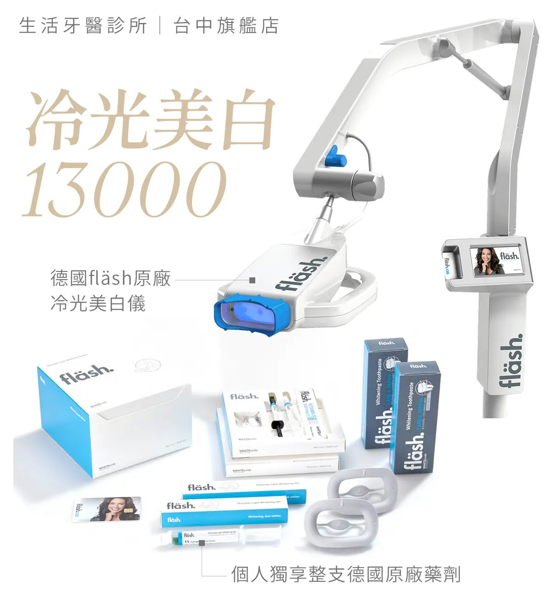
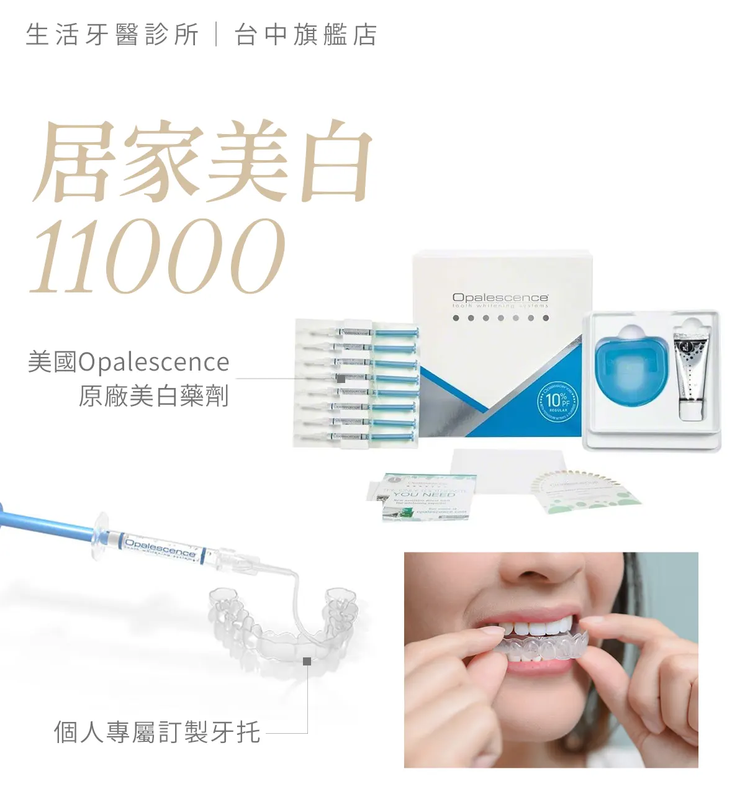

噴砂清潔 × 冷光美白
先除去污漬，再提亮整體齒色
先進行噴砂清潔，除去牙齒表面的色素與污漬，再以冷光美白提亮整體齒色，讓牙齒恢復潔淨明亮的外觀。
在安全評估下提升牙齒明亮度
從整體齒色、單顆暗沉到表面染色，生活牙醫會先檢查蛀牙、牙周、敏感與假牙範圍，再評估冷光美白、居家美白、齒內美白或噴砂清潔。

牙齒變黃、單顆牙變暗與表面色素沉積的成因不同。療程前會先檢查自然牙、補綴物、蛀牙、牙周與敏感狀況，再選擇適合的改善方式。
從口腔檢查、德國 fläsh 美白系統到療程後照護，依原始齒色與敏感程度規劃合適的亮白方式。

冷光美白是在診間由醫療人員操作的牙齒美白方式，適合希望在較短療程中改善整體自然牙色澤的人。
療程前會先記錄齒色並保護牙齦，再依牙齒狀況使用美白藥劑與冷光設備。過程中會觀察牙齒敏感與牙齦反應，必要時調整療程節奏。
既有假牙、貼片與樹脂補牙不會隨自然牙同步變白；若前牙區有修復物，需一併評估完成美白後的色澤協調。

居家美白是經醫師評估後，使用個人牙托與指定美白材料，在家依照指示逐步調整牙齒色階的方式。
相較於診間集中處理，居家美白的變化較漸進，也方便依敏感程度調整使用頻率。牙托的貼合度、材料用量與配戴時間都需要依醫囑執行。
療程期間應避免自行增加藥劑或延長時間；若牙齦受到刺激、牙齒明顯痠軟或牙托不合，應暫停使用並與診所聯繫。

齒內美白主要針對牙髓壞死、外傷或內部色素造成變色，且已完成根管治療的單顆牙齒，和一般作用於牙齒外表的美白方式不同。
醫師會先確認根管治療品質、牙體剩餘結構與是否有裂痕，再評估能否由牙齒內部放置美白材料。療程通常需要分次回診觀察顏色變化。
若牙齒結構脆弱、色澤來源不適合美白，或與鄰牙仍有明顯色差，可能需要進一步討論樹脂、貼片或全瓷冠等替代方式。

噴砂是利用細緻粉末、水流與氣流協助移除牙齒表面的咖啡、茶、菸垢等外源性色素，重點是清潔表面沉積，並不是改變牙齒本身的色階。
若暗沉主要來自表面染色，噴砂後通常能恢復較乾淨的原始齒色；若是牙齒內部顏色或自然牙色偏黃，則需再評估冷光美白或居家美白。
牙周發炎、牙齒敏感、牙根暴露或特殊修復物周圍，會由醫療人員判斷適合的清潔方式與操作範圍。

嚴選真實案例，由專業醫師團隊親自操刀，沒有千篇一律的療程，只有最適合你的量身規劃

整理諮詢時常見的問題，協助您在看診前先掌握基本方向。
歡迎預約諮詢，由醫師一對一親診為您規劃療程，讓我們一起打造最符合需求的治療方案